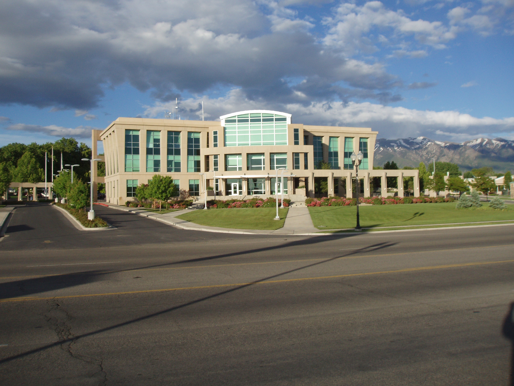

Discover Clearfield
Clearfield City Mayor
Mark Shepherd has been mayor of Clearfield City since 2014 and will continue to take this seat at least until the end of his term in 2026. He has worked miracles for Clearfield in order to update antiquated infrastructure, and continues to win the popular vote each term due to bringing more and more people and small businesses into the city and building a stronger community.
Clearfield City Building
The Clearfield City building is located in the heart of the city. This is where you will find your local police department, government offices, city council, and even a good few event rooms that are publicly available for rent.
Clearfield Aquatic and Fitness Center
Right down the street from the City Building, you will be able to find the Aquatic and Fitness Center, which shares half its building with North Davis Junior High. Focusing on keeping the community active and healthy, you can find not only two large, year-round indoor pools with ammenities such as a diving board and multiple water slides, but there is also a seasonal small children outdoor pool and splash pad area. On the lower level just past the front desk, you can also find a decent weight training gym along with a daycare/nursery area next door. On the upper level, you can find many foam-padded rooms meant for exercise and spin classes and weekly multi-age martial arts classes. Across the back of the same level, you will have full access to a cardio room with a view overlooking the indoor pools. What a great place for all-in-one personal health!
Clearfield Station
Turning right off of Main Street, you will be able to get straight to the UTA Clearfield Train Station with a large parking area and bus drop-off that will put you right in front of the UTA FrontRunner speed train track, that can take you through to the majority of central and northern Utah. This lot is also currently under construction to add several new ammenities, such as apartments, restaurants, office spaces, and other extracurricular/entertaining businesses. Come stop by!
'Tis the Season in Clearfield!
Are you looking for a fun seasonal community activity to meet new friends and neigbors? Well, do we have the opportunity for you! Each year, just after Thanksgiving, our Parks and Recreation team work tirelessly to quickly "deck the halls" in an effort to celebrate the Christmas season. Along with decorations across the city, a large area in front of the City Building is dedicated to a small Christmas Village. Per tradition, every year one more decoration is placed or one more tree is strung with breathtaking lights. Each winter season, an activity takes place where Mayor Shepherd officially welcomes the season with a festive speech, live season-oriented music, and chooses one lucky little boy or girl to "flip the switch" and light up the Christmas lights across the property for the very first time. But don't forget to stay until the end, or you might miss out on complimentary donuts, hot chocolate, and if you're lucky, a visit from Santa Claus and an entourage of Clearfield City's own police officers and North Davis' finest firefighters.